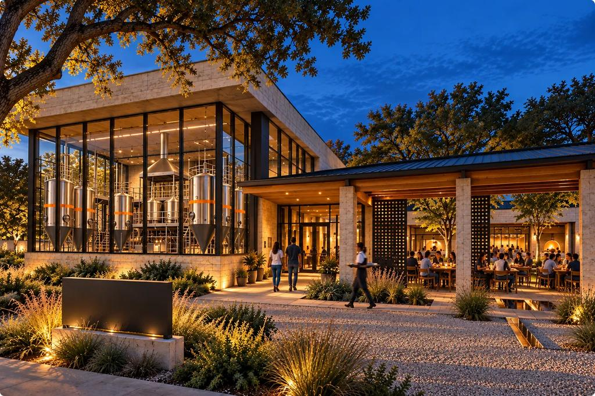
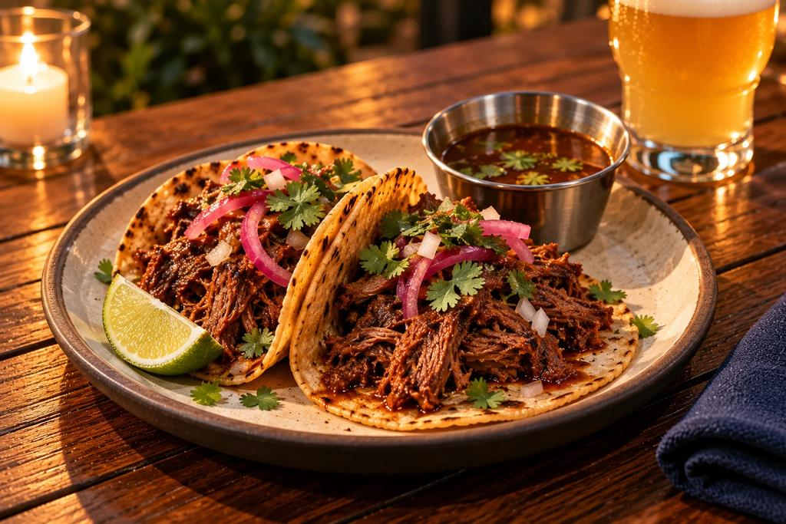
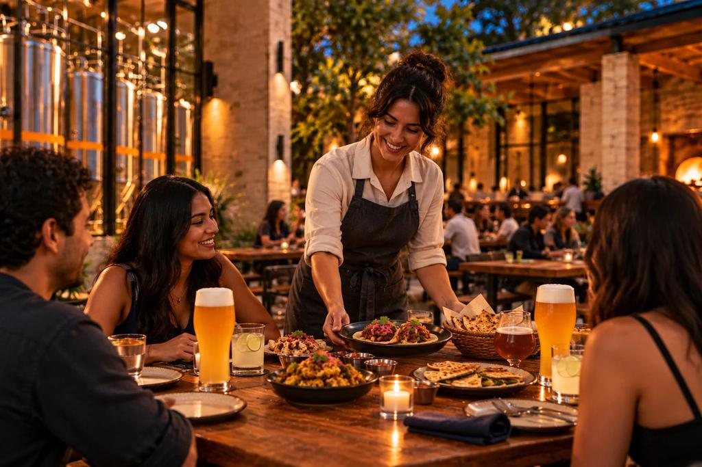

Austin, Texas · Founder Vision
NASHA
Food and beer, designed together.
A future Indo-Mexican brewery and kitchen
The idea
India × Mexico × Austin
Indian fire and Mexican corn. Craft beer and zero-proof drinks. A shaded court with the brewery behind glass. NASHA imagines all of it as one meal, designed from the first idea to the last pour, and shared at long tables under Texas oaks.
Our story
The Court
A brewery you walk into, a court you walk out to.
Limestone, glass and shade, with the tanks beside the tables.
Walk the CourtThe food
Five dishes. Fire, corn, chile and curry leaf.
Chicken 65 on thick totopos. Charred paneer in a corn tortilla. Goat birria with a cup of consomme. Each one made to meet a beer and a zero-proof drink.
See the food



The beer
Brewed for the food.
Five beers designed alongside the kitchen, and zero-proof drinks poured with the same care.
Meet the beers
The evening
Warm, shared, unhurried.
Plates in the middle of the table. A server who knows what pairs with what. The glow of the brewery through glass as the court fills.
A night at NASHAThe founder vision
Food and beer, designed together to draw you in.
Texan bones. Non-Texan details.
Read the story